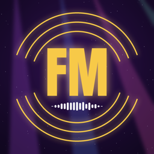

FM Studio
Português. FM Studio é a ferramenta própria do artista Frequência Melody para preparar e publicar os próprios vídeos musicais (YouTube e TikTok), sempre com a aprovação do artista antes de publicar.
English. FM Studio is the artist Frequência Melody's own tool to prepare and publish their own music videos (YouTube and TikTok), always after the artist approves them.
YouTube: Frequência Melody · TikTok: @frequenciamelody